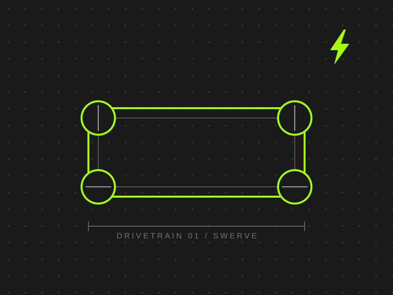
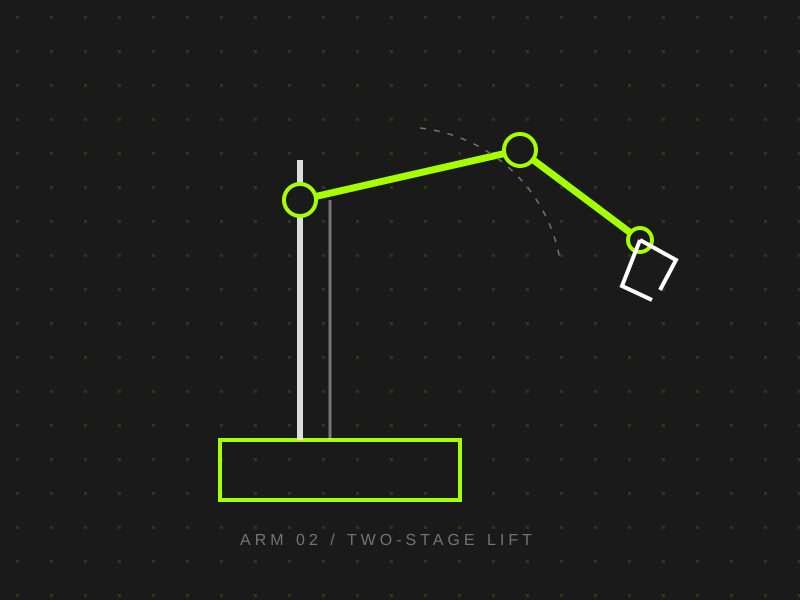
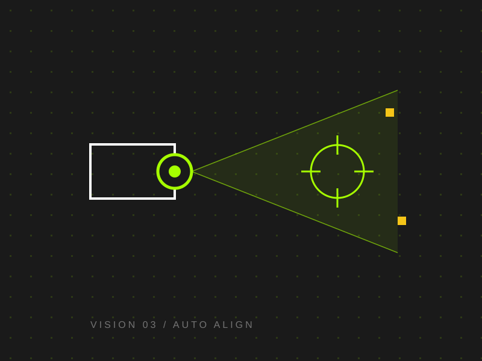
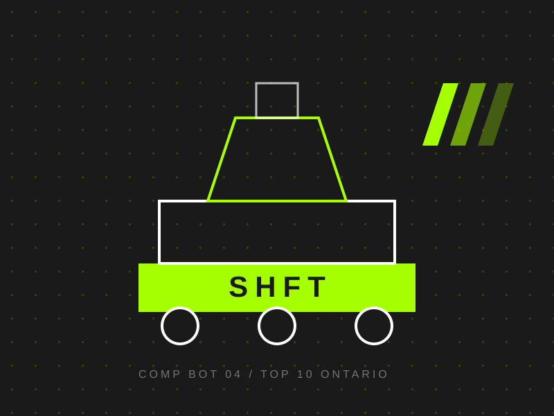
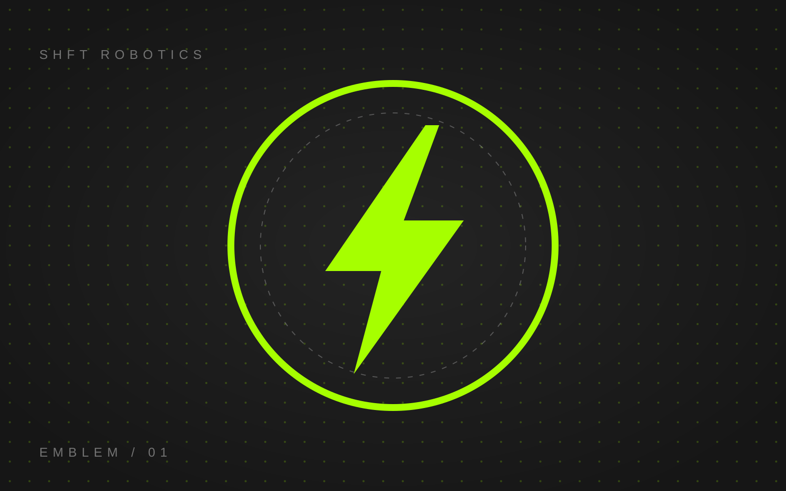
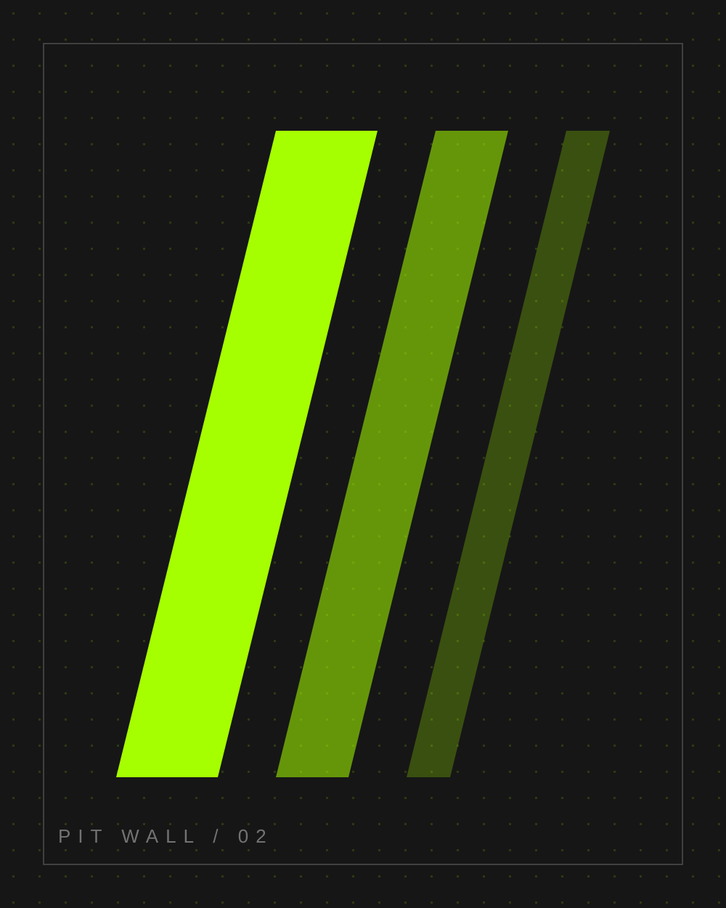
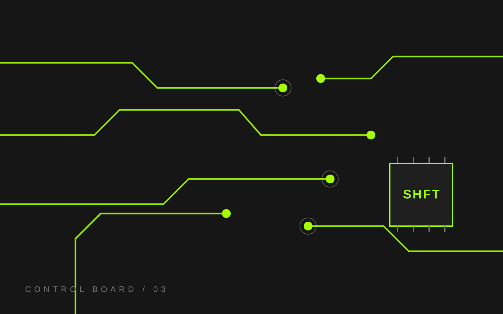
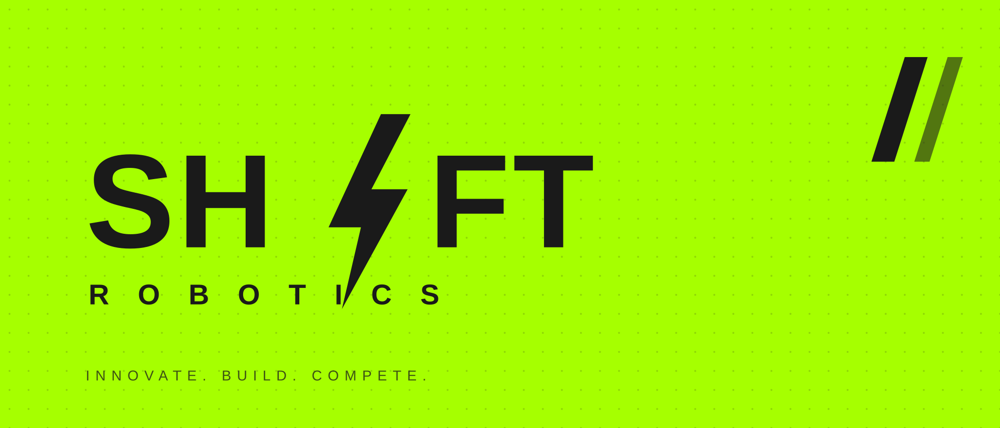

KICKOFF RIG
SWERVE TESTBED. WEEK ZERO.
ONTARIO FRC. FOUNDED 2025. TEAM NUMBER PENDING.
A new Ontario FRC team built to compete from day one. Move your pointer: the liquid trail is a WebGL mask, same trick as landonorris.com.
01 / WEBGL FLUID TRAIL. PING-PONG FBO MASK OVER TWO PROCEDURAL SCENES.
02 / MARQUEE. SPEED AND SKEW DRIVEN BY LIVE SCROLL VELOCITY.
03 / SCRUBBED TEXT. LINE MASKS + OUTLINE FILL ON SCROLL.
We are a rookie team with a veteran mindset. Every mechanism is designed twice and built once. Every match is data. Every loss is a prototype for a win.
The goal: top 10 in Ontario in our first season. We plan the whole year backwards from it.
04 / COUNTERS. NUMBERS TWEEN UP WHEN THE SECTION ENTERS.
05 / THREE.JS VIEWER. DRAG TO ROTATE. INERTIA + SCROLL-LINKED SPIN.
06 / PINNED HORIZONTAL SCROLL. INNER PARALLAX VIA CONTAINERANIMATION.

SWERVE TESTBED. WEEK ZERO.

TWO-STAGE LIFT. PROTOTYPE.

VISION + AUTO ALIGN.

TARGET: TOP 10.
JOIN THE BUILD SEASON.
07 / MEDIA REVEALS. CLIP-PATH WIPE IN, INNER SCALE PARALLAX, HOVER DESATURATION FLIP.




08 / INTERACTION LAB. MAGNETIC PULL, TEXT SCRAMBLE, UNDERLINE SLIDE, VECTOR MOTION LOOP.
Button leans toward the pointer, snaps back on leave. Click fires the page transition wipe.
Characters cycle through a glyph set before settling, the LN nav hover.
landonorris.com ships Rive files for vector motion. Emulated here as a scripted SVG loop: draw-on ring, pulsing bolt.
09 / DATA TABLE. ROW HOVER SLIDE, SEMANTIC STATUS CHIPS, STAGGERED ENTRY. SAMPLE SEASON DATA.